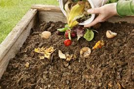

Para sumar alguna idea más comenta contando tu proyecto o donde lo viste así lo damos a conocer.
A continuación estan las ideas mas fáciles de realizar:
Invernaderos
Invernaderos hermosos para cultivar y descubrir la belleza de la huerta. Encontra el paso a paso

Bolsas de regalo.
Usamos diarios y hojas impresos. Este es laprimer acolumna ndfn.

placeholder
Compost.
Abono ideal para huertas y plantas del hogar. Este es laprimer acolumna ndfn.
"Vasos de vidrio"
Como hacer distintos recipientes a partir de las botellas de vidrio. Este es laprimer acolumna ndfn.